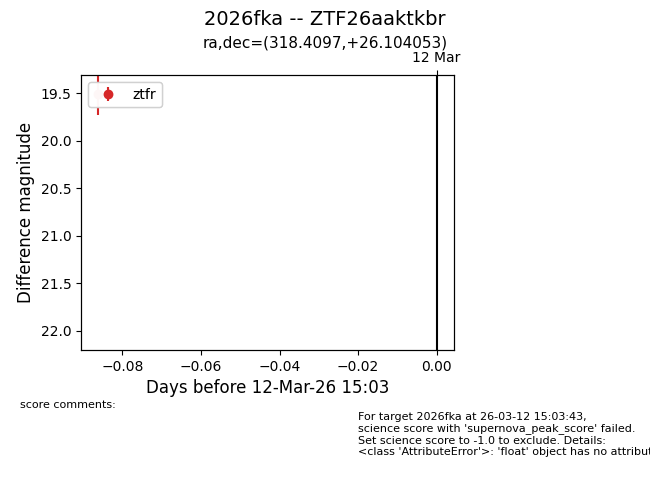
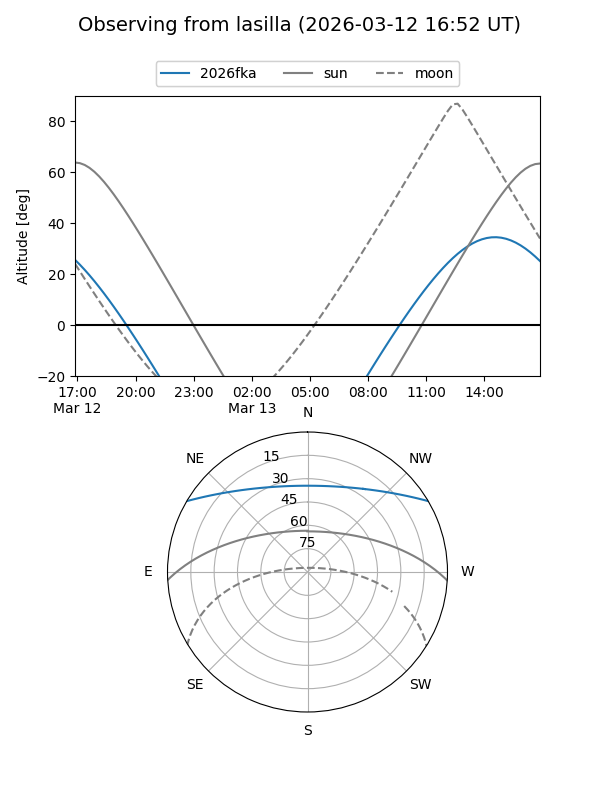
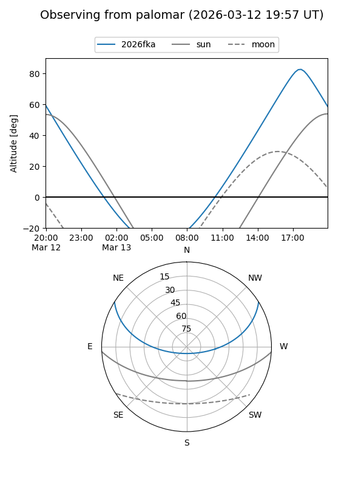

2026fka
Target 2026fka at 2026-03-12 15:04
Aliases and brokers:
FINK: link
Lasair: link
ALeRCE: link
TNS: link
YSE: link
alt names
ZTF26aaktkbr (ztf,fink_ztf)
2026fka (tns,yse)
Coordinates:
equatorial (ra, dec) = 318.4097,+26.10405
equatorial (HMS+DMS) = 21:13:38.34,+26:06:14.59
galactic (l, b) = (73.6879,-15.30979)
Flags:
Photometry:
last ztfr=19.51
1 ztfr detections
Lightcurve

Visibility


Additional plots